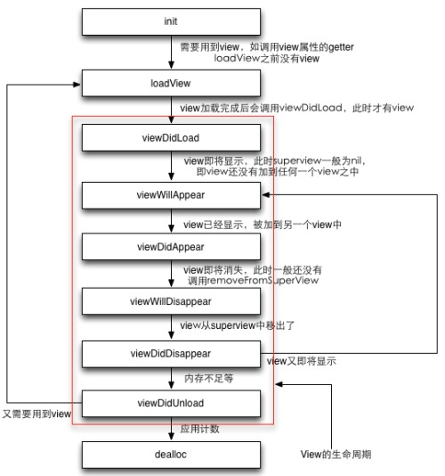

iOS Controller和View的生命周期
张茨一飞 : JUN 27, 2017 当你alloc并init了一个ViewController时，这个ViewController应该是还没有创建view的。ViewController的view是使用了lazyInit方式创建，就是说你调用的view属性的getter：［self view］。在getter里会先判断view是否创建，如果没有创建，那么会调用loadView来创建view。loadView完成时会继续调用viewDidLoad。loadView和viewDidLoad的一个区别就是：loadView时还没有view。而viewDidLoad时view以及创建好了。
当view被添加其他view中之前时，会调用viewWillAppear，而之后会调用viewDidAppear。
当view从其他view中移出之前时，会调用viewWillDisAppear，而之后会调用viewDidDisappear。
当view不在使用，而且是disappeared，受到内存警告时，那么viewController会将view释放并将其指向nil。
代码组织（如何设计良好的viewcontroller）
ViewController生命周期中有那么多函数，一个重要问题就是什么代码该写在什么地方。
1、init里不要出现创建view的代码。良好的设计，在init里应该只有相关数据的初始化，而且这些数据都是比较关键的数据。init里不要掉self.view，否则会导致viewcontroller创建view。（因为view是lazyinit的）。
2、loadView中只初始化view，一般用于创建比较关键的view如tableViewController的tabView，UINavigationController的navgationBar，不可掉用view的getter（在掉super loadView前），最好也不要初始化一些非关键的view。如果你是从nib文件中创建的viewController在这里一定要首先调用super的loadView方法，但建议不要重载这个方法。
3、viewDidLoad 这时候view已经有了，最适合创建一些附加的view和控件了。有一点需要注意的是，viewDidLoad会调用多次（viewcontroller可能多次载入view，参见图2）。
4、viewWillAppear 这个一般在view被添加到superview之前，切换动画之前调用。在这里可以进行一些显示前的处理。比如键盘弹出，一些特殊的过程动画（比如状态条和navigationbar颜色）。
5、viewDidAppear 一般用于显示后，在切换动画后，如果有需要的操作，可以在这里加入相关代码。
6、viewDidUnload 这时候viewController的view已经是nil了。由于这一般发生在内存警告时，所以在这里你应该将那些不在显示的view释放了。比如你在viewcontroller的view上加了一个label，而且这个label是viewcontroller的属性，那么你要把这个属性设置成nil，以免占用不必要的内存，而这个label在viewDidLoad时会重新创建。